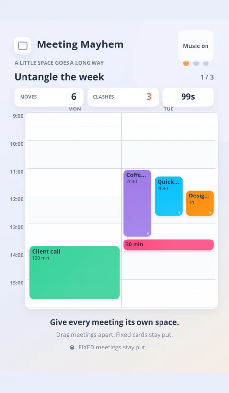
Calendar puzzle
Meeting Mayhem
Move meetings, work around locked events and clear calendar overlaps. A compact adaptation of our Android puzzle game.
Play Meeting Mayhem →Blueberry Basement on Minit Games
Match robots on a conveyor belt, count sheep or steer a fleet through a swarm. We make short-form games for Minit, alongside Meeting Mayhem on Android.
Find your next game ↓Find us on Minit as @blueberrybasement.
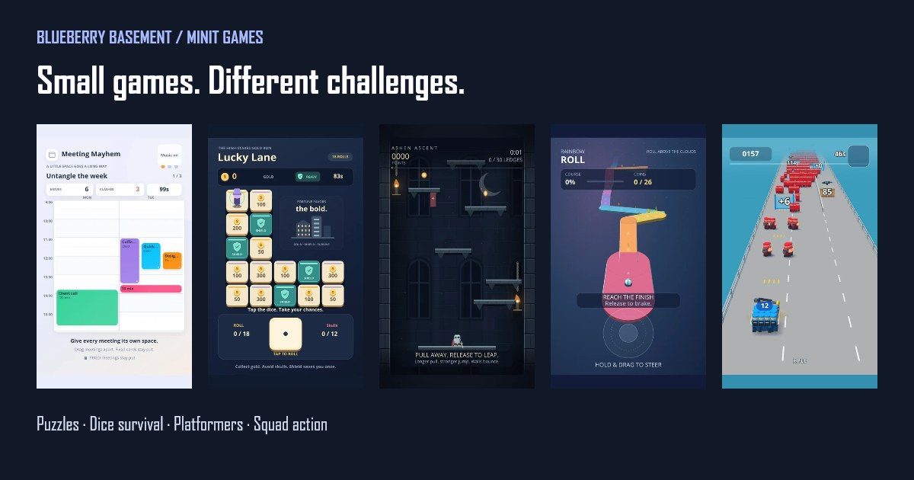
Choose a game
See three picks in our guide to quick browser games for a five-minute break.
Each play link opens a published Minit Post. Other Posts can offer different levels, layouts or difficulty settings.

Calendar puzzle
Move meetings, work around locked events and clear calendar overlaps. A compact adaptation of our Android puzzle game.
Play Meeting Mayhem →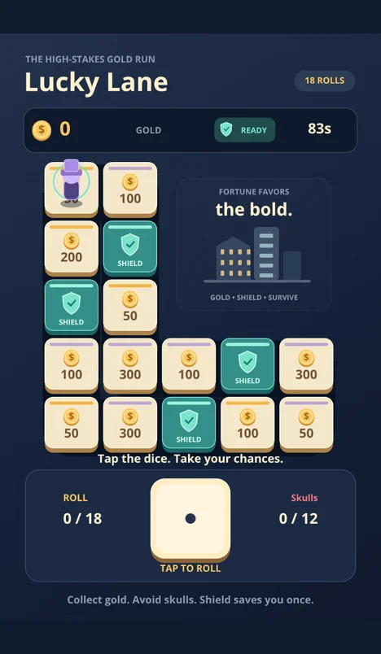
Dice and survival
Roll around a gold-filled board as safe spaces turn into skulls. Shields protect a landing, but every roll changes the risk.
Play Lucky Lane →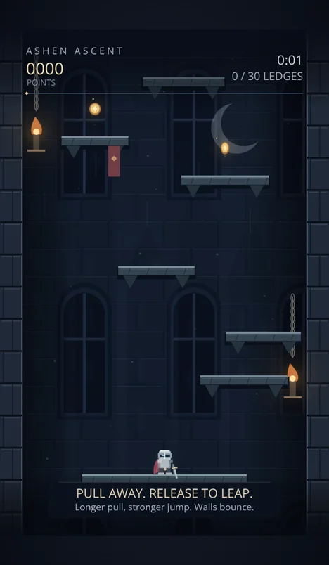
Climbing platformer
Aim each jump and climb from ledge to ledge toward the crown. A missed landing can end the run.
Play Ashen Ascent →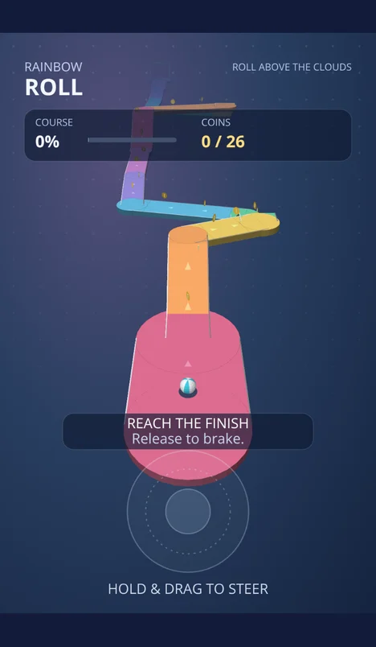
3D ball platformer
Guide a ball across winding paths, narrow bridges and steep ramps. Collect coins while keeping enough control to reach the finish.
Play Rainbow Roll →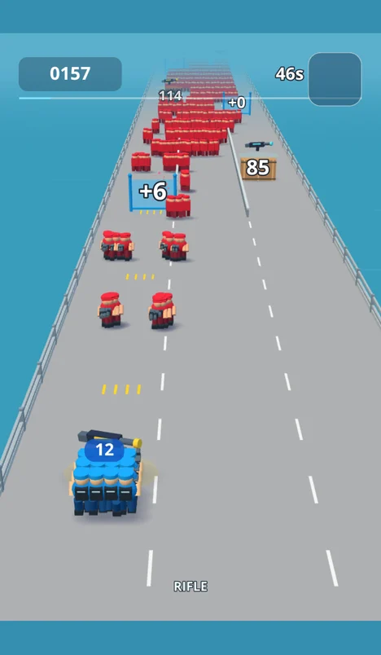
Squad shooter
Steer an automatically firing squad, recruit soldiers and collect stronger weapons. Dodge enemy attacks and fight through to the bosses.
Play Riot Road →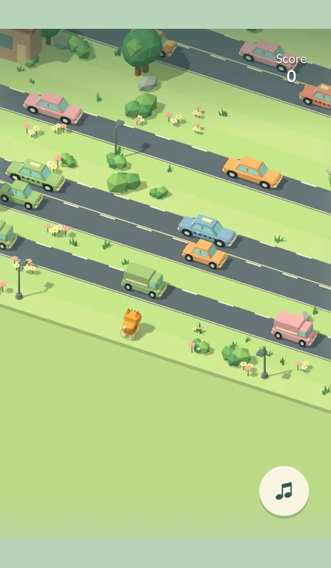
Traffic survival arcade
Tap to hop a ginger cat forward through pastel 3D traffic. Wait on the grass for a gap and earn a point for each new row reached. One collision ends the run.
Play Cat Crossing →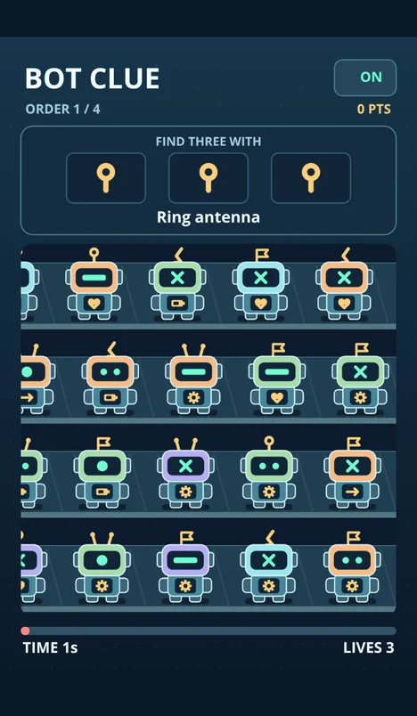
Visual matching puzzle
Tap three robots with the requested antenna, visor or chest panel before the order expires. Wrong taps cost lives.
Play Bot Clue →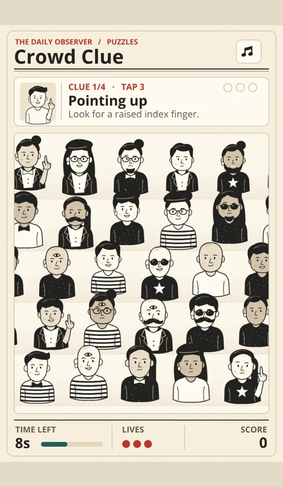
Hidden-character puzzle
Tap three people in a moving crowd who match the clue. When it shows two traits, look for both on the same person.
Play Crowd Clue →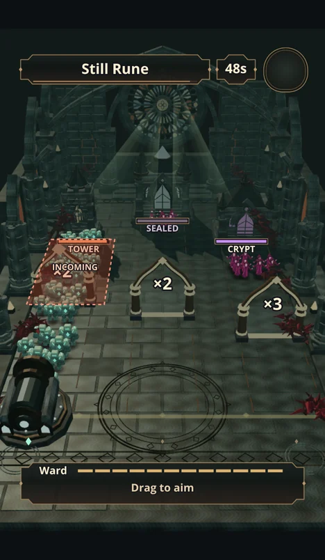
Cannon defense
Drag to steer an automatic cannon, intercept the horde and break the defenses. Aim at the exposed core to finish the siege.
Play Hollow Siege →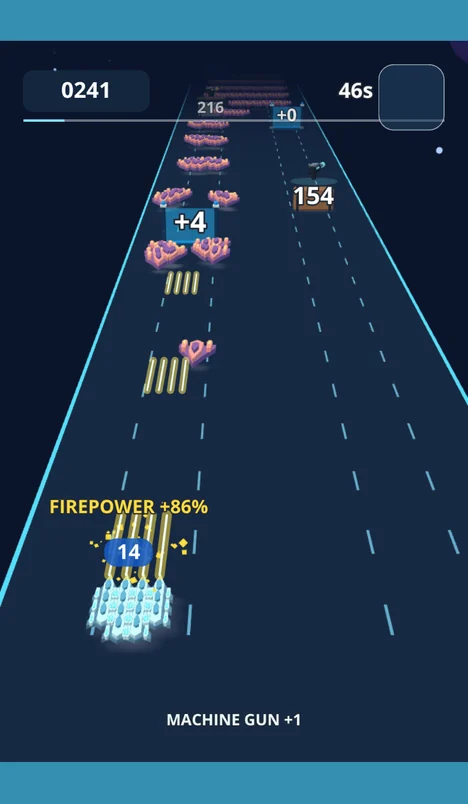
Fleet shooter
Drag to steer a fleet that fires automatically. Shoot recruitment gates and weapon crates, dodge diving drones and take down both enemy ships.
Play Orbital Swarm →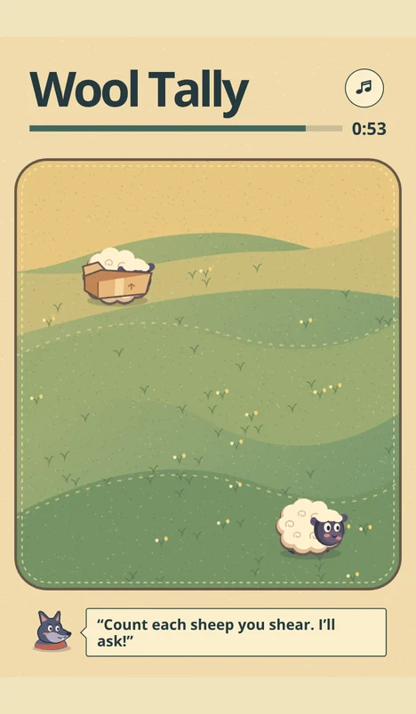
Counting arcade game
Tap to shear sheep, leave disguised wolves alone and remember how many sheep you sheared for the final quiz.
Play Wool Tally →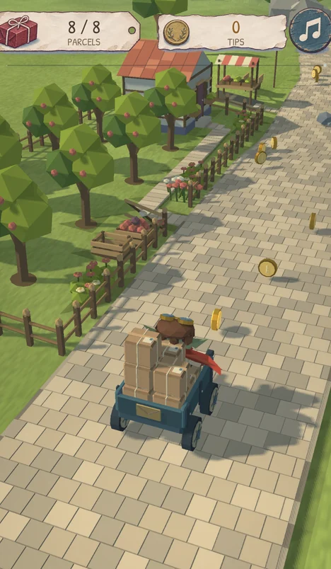
Delivery arcade game
Drag sideways to steer a loaded cart, gather tips and avoid obstacles. Deliver as many parcels as you can to the post office.
Play Goblin Express →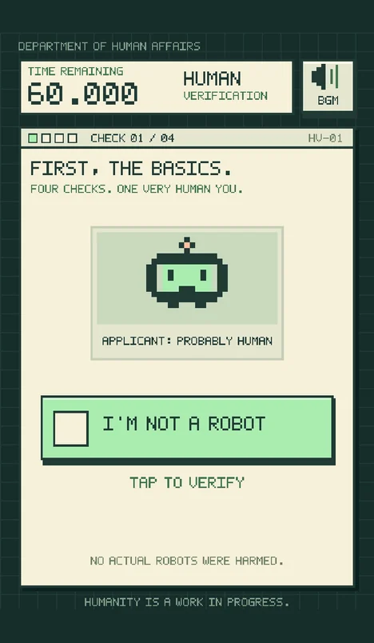
Timed mini-puzzles
Race a shared timer through a pixel-art human verification test. Tap choices, drag shapes into place and enter a distorted code.
Play Captcha Hell →A complete little session
Minit Games is a platform for short-form games in a feed. Our games focus on one clear challenge, touch controls and an ending within the session. They are published as playable Posts.
Choose a game above. The official Minit play link opens the app when supported, or the web player. Follow Minit’s access prompts on your device; you do not need to install each individual game.
Meeting Mayhem also has a separate Android app on Google Play with progression, daily tasks and rewards. Compare the two versions.
From the studio
Guides & strategy
Learn to scan for one trait, rule out lookalikes and check exact matches with a worked example from Bot Clue.
Game spotlight
Meet Cat Crossing: guide a ginger cat through pastel 3D traffic, wait for a gap and see how far one more hop takes you.
Studio notes
Why Blueberry Basement is building for Minit Games: short, self-contained games, touch controls and different challenges from one game.
Game collection
Explore Blueberry Basement’s Minit games, from visual puzzles to arcade challenges, with gameplay summaries and direct play links.
Game design
Compare Meeting Mayhem on Google Play with its Minit adaptation: the same calendar puzzle idea, with different session structure and surrounding features.